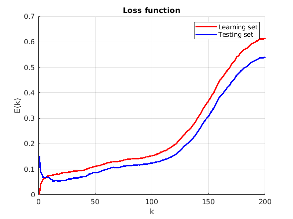

Contents
Домашнее задание №0
clc; clear; close all;
N = 200;
mu = 0;
sigma = 0.3;
k = 200;
generate learning set
x = rand(1, N);
eps = normrnd(mu, sigma, 1, N);
y = sin(2 * pi * x) + eps;
T = [x(:) y(:)];
generate testing set
x4 = rand(1, N / 4);
eps4 = normrnd(mu, sigma, 1, N / 4);
y4 = sin(2 * pi * x4) + eps4;
T4 = [x4(:) y4(:)];
calculate error for learning set
learning_err = zeros(1, N);
for n=1:k
prediction = [T(:, 1) zeros(N, 1)];
for i=1:N
diff = [abs(T(:, 1) - T(i, 1)) T(:, 2)];
diff = sortrows(diff, 1);
prediction(i, 2) = mean(diff(1:n, 2));
learning_err(n) = learning_err(n) + (prediction(i, 2) - T(i, 2)) ^ 2;
end
end
calculate error for testing set
testing_err = zeros(1, N);
for n=1:k
prediction = [T4(:, 1) zeros(N / 4, 1)];
for i=1:N/4
diff = [abs(T(:, 1) - T4(i, 1)) T(:, 2)];
diff = sortrows(diff, 1);
prediction(i, 2) = mean(diff(1:n, 2));
testing_err(n) = testing_err(n) + (prediction(i, 2) - T4(i, 2)) ^ 2;
end
end
draw graphics
hold on; grid on;
plot(1:N, learning_err / N, 'r', 'lineWidth', 2);
plot(1:N, 4 * testing_err / N, 'b', 'lineWidth', 2);
title('Loss function'); legend('Learning set', 'Testing set'); xlabel('k'); ylabel('E(k)');

Как можно заметить, для обучающего набора наименьшие значения ошибки достигаются при k = 1, при этом, на тестировочном наборе здесь
достигается довольно большая ошибка. Наиболее хороший результат достигается на значениях k = 10-50. При больших значениях k, ошибка
возрастает. Эти результаты сходятся с теоретическим предположением.